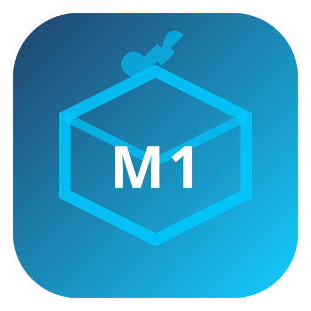

Cross-platform installer authoring suite — create professional macOS DMG, Windows NSIS, and Linux .deb installers from one YAML project file.
Define your entire installer in one human-readable YAML file. App info, components, file lists, shortcuts, registry entries, prerequisites, custom actions — all in one place.
8-tab graphical editor: App Info, Files, Components, Shortcuts, Registry, Security, Prerequisites, Custom Actions. Dark-mode Qt6 UI with 32 SVG icons.
Build macOS DMG + Windows NSIS + Linux .deb in sequence from a single Build button click. Each backend runs on a dedicated QThread.
macOS backend automatically detects Homebrew dylib dependencies via
otool -L, copies them into Contents/Frameworks/,
and rewrites load commands to portable @executable_path refs.
macOS ad-hoc or Developer ID signing, optional Apple notarization via
xcrun notarytool. Windows Authenticode PFX signing.
Linux GPG package signing.
Create self-signed certificates and certificate signing requests (CSR) for all three platforms via the built-in OpenSSL wrapper — no terminal needed.
Save company name, email, website, signing identities, and custom tokens as reusable profiles. Apply any profile to auto-populate publisher and signing fields across projects.
Import existing .nsi or .iss Windows installer
scripts as starting points, then export to the universal .mis
format or extend for other platforms.
Launch the runtime installer wizard against your current project directly from Studio — macOS, Windows, and Linux all supported. Rapid iteration without a full build.
Color-coded, timestamped event log dock (Info / Warn / Error / Success). Persistent JSON build history records every build with output path and code-sign status.
Define system requirements (OS version, frameworks, runtimes) that are verified before install begins. Advisory or blocking — your choice.
Run shell scripts, PowerShell commands, or Python/Ruby scripts at any install lifecycle event: before-install, after-install, before-uninstall, after-uninstall.
| Feature | macOS | Windows | Linux |
|---|---|---|---|
| DMG installer | ✓ create-dmg / hdiutil | — | — |
| NSIS installer (.exe) | — | ✓ makensis | — |
| .deb package | — | — | ✓ dpkg-deb |
| AppImage | — | — | ✓ AppDir skeleton |
| Code signing | ✓ codesign / notarize | ✓ signtool PFX | ✓ GPG |
| Homebrew baking | ✓ otool + install_name_tool | — | — |
| Registry entries | — | ✓ reg.exe | — |
| Desktop shortcuts | ✓ webloc / alias | ✓ .lnk / Start Menu | ✓ .desktop |
| Prerequisites check | ✓ | ✓ | ✓ |
| Custom actions | ✓ sh | ✓ cmd / PowerShell | ✓ sh / py |
| Uninstaller manifest | ✓ | ✓ | ✓ |
| Studio IDE | ✓ Qt6 native | ✓ Qt6 native | ✓ Qt6 native |
A single YAML file describes your entire installer. Load it into Studio, adjust in the GUI, then click Build. The format is version-stable and human-editable.
format: mis/1
app:
name: "My Application"
version: "2.1.0"
publisher: "ACME Corp"
identifier: "com.acme.myapp"
url: "https://acme.example.com"
defaults:
install-dir:
macos: "/Applications/MyApp"
windows: "C:\\Program Files\\ACME\\MyApp"
linux: "/opt/acme/myapp"
require-admin: true
allow-custom-dir: true
launch-after: true
targets: [macos, windows, linux]
theme:
accent-color: "#00c9ff"
background-color: "#1a1a2e"
dark-mode: true
components:
- id: core
name: "Core Application"
required: true
files:
- src: "MyApp.app"
dst: "{install-dir}/MyApp.app"
isDir: true
prerequisites:
- id: os-check
name: "macOS 12 Monterey or later"
checkCmd: "[ $(sw_vers -productVersion | cut -d. -f1) -ge 12 ] && echo ok"
platforms: [macos]
custom-actions:
- id: quarantine-remove
trigger: after-install
type: shell
command: "xattr -dr com.apple.quarantine \"{install-dir}/MyApp.app\" 2>/dev/null || true"
platforms: [macos]
signing:
macos-signer: "" # Leave blank for ad-hoc, or set Developer ID
macos-notarize: false
Place your built app, config files, and resources into a payload/
staging directory. Use the included assemble-payload.sh helper
or script your own.
Open Studio and load an existing .mis file, create a new
project, or import an existing NSIS / Inno Setup script.
Fill in App Info, define components and file lists, set shortcuts, configure signing. Apply a Builder Profile to auto-fill your company details.
Click Test Installer to preview the wizard, then click Build
to produce the final .dmg, .exe, or .deb.